06 / Business strategy
Design & Entrepreneurship
How design methods can help young businesses understand their markets, organise for growth and build partnerships.
Designing for a business to last
During my master’s, I took courses at the Delft Centre for Entrepreneurship to extend my design skills with a stronger market perspective. A product, service or system can improve through many design iterations, but it also needs a business that can maintain and develop it over time.
By analysing several startups, I explored the pressures faced by innovative but vulnerable companies. Their development stages reminded me of the iterative design process: teams need to recognise what the business needs next and organise the right people and resources around that priority. This made me interested in how design can inform market strategy and help a business grow.
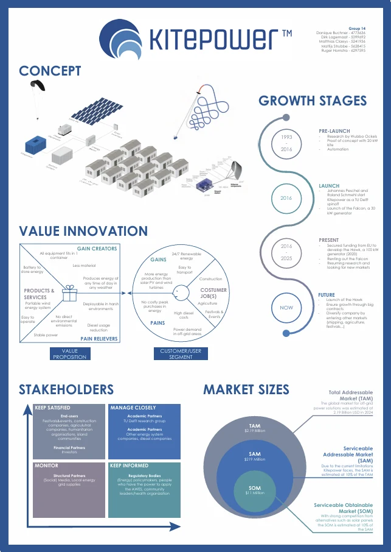
Making collaboration work
For a study of Vattenfall’s startup spin-off Cake, I looked at how a large company can work with a young venture through intellectual property. The case showed how startups can bring new ideas into an established industry, while larger organisations contribute experience, reach and resources.
My research led to recommendations for Vattenfall’s startup programme, including changes to parts of two incubation models. The comparison below summarises how low-selective, supportive and incubator models differ across financial, organisational, human, technological, network and infrastructure resources. A separate course on patents also taught me why intellectual property matters when designing products that use new technology.
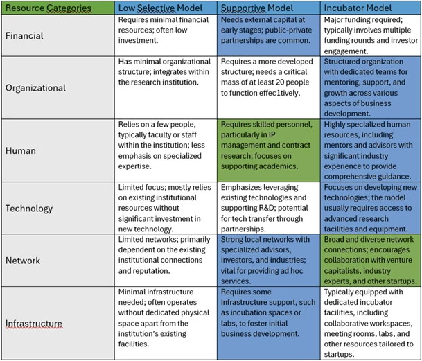
A business model for circular bricks
Stadsgrond is a Rotterdam startup making circular, fully sustainable bricks from locally sourced clay. Our team used market research and strategy tools to understand where the company could create value, who it should serve and what could help it grow. We combined these methods to develop a business-model direction, prioritise tasks and identify practical next steps, including how Stadsgrond might eventually partner with larger firms.
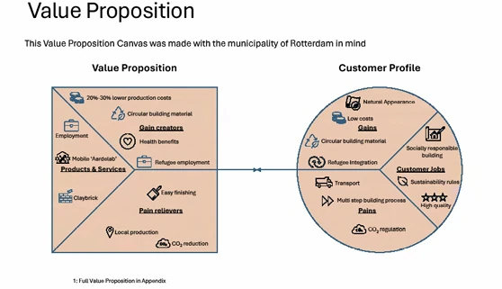
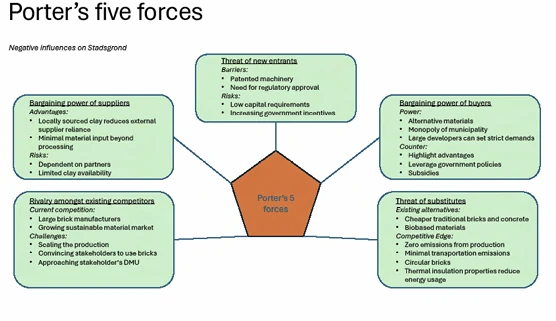
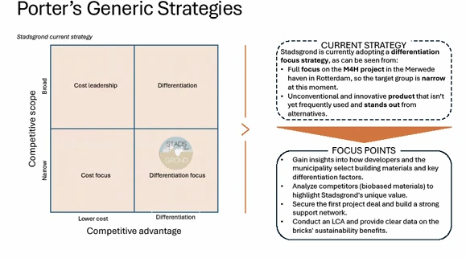
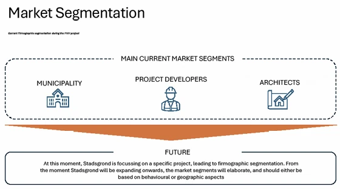
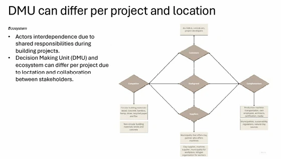
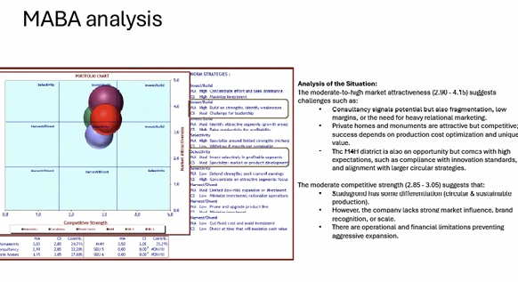
Prove value, then choose how to scale
The analysis suggested that Stadsgrond should first prove its bricks with smaller projects, build credibility through certification and then approach larger contractors and project developers. We also explored different ways to earn revenue: continue selling bricks, offer brick production as a service, or provide an intermediate service that takes in local clay and delivers customised bricks at the project location.
These options connect the company’s growth stage to its customers, operations and partners. They offer different routes to scale and provide a basis for testing which model best fits the market.
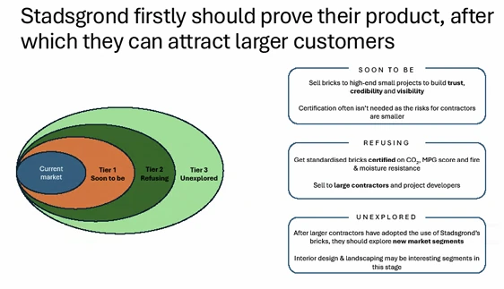
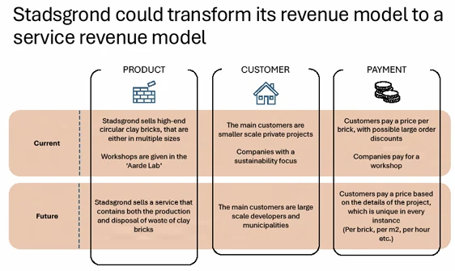
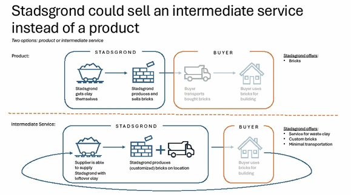